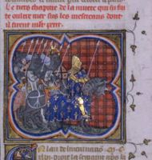
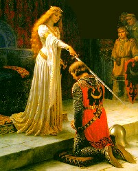
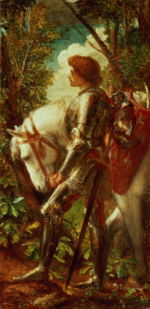
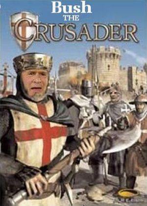

Novela caballeresca
 De: La Frikipedia, la enciclopedia extremadamente seria.
De: La Frikipedia, la enciclopedia extremadamente seria.
| De la serie Literatura para todos:
|
| Novela caballeresca
|
| 
|
| Todos los caballeros son franceses, como este guapetón
|
|
| Creador
|
Disputado entre William Shakespeare y Guillermo de Berguedá
|
| Época
|
Tiempos del Age of Empires II
|
| Estilo
|
Bajo-Alto medieval
|
| Idiomas usados
|
Lingua franca de la época, o sea lengua de Oc
|
| Estructura
|
Cantares, estrofas o versículos
|
| Dificultad
|
Muy elevada
|
| Notas
|
"Dios salve a Amadís de Gaula de las hogueras nazis"
|
La novela caballeresca es un género medieval de literatura violenta y de contenido altamente sexual muy apreciado desde el siglo XII en las cortes de Aquitania, París y Milán, donde los caballeros las llevaban bajo el brazo para leerlas y para azotar a los curas que trataban siempre de prohibir la diversión y las justas. Este género fue cobardemente atacado por el infame hereje Miguel de Cervantes en su bulo de baja calidad "El ingenioso hidalgo Don Quijote de la Mancha".
Origen

Genitivo Sajón fue la inspiración de Guillermo de Berguedá para su obra, y no recibió ni un sólo florín por ello.
La novela caballeresca nació en 1099, cuando el Sumo Pontífice de Roma mandó a sus fieles a Jerusalén. De las hazañas extraídas de la Primera Cruzada, el trovador Guillermo de Bergedá (también llamado Güllermo el cabrón) hizo una historieta ridícula donde narraba las patéticas aventuras del caballero Genitivo Sajón. Guillermo fue asesinado por un asesino inglés llamado William Shakespeare, que actuaba en Picadilly Circus y en London Bridge a las órdenes del noble francés Godfrey de Anjou, condotiero de Florencia. El perverso condotiero asesinó a su vez a Shakespeare y le robó los manuscritos. Tras la primera cruzada, Godfrey andaba escaso de florines, ya que había sido tan estúpido para creer que iba a sacar algo de Tierra Santa y había regalado gratis su dinero al obispo de Angers, que ostentaba el título del "Hombre más gordo del mundo".
El vil noble francés trató de sacar provecho del librito y viajó a la corte de Inglaterra en Normandía (sí, no es coña, la corte inglesa estaba en Francia). Se presentó ante el rey inglés, Guillermo el Rojo, para venderle los derechos de copia a mano por parte de curas sin nada que hacer del libro. El Rojo accedió y se hizo con el libro. Sabemos que tras haber leído la historia de Genitivo Sajón, el rey murió de un empacho de literatura. Tras la debida venganza por parte de sicarios genoveses totalmente sobrios contra Godfrey, el libro llegó a manos de un tal Perico de los Palotes, caballero teutónico de Ratisbona, el único de su país que sabía leer.
Debido a la persecución por parte de la Santa Inquisición de todo tipo de cómic, libro o DVD profano, Perico se vio obligado a esconder la preciada obra en sus calzones malolientes hasta que se escondió en tierras borgoñonas. Le gustó la historia, así que la copió sin más, modificando algunos detalles; añadió varias cosillas:
- El caballero Genitivo Sajón estaba muy bueno; es decir, en vez de violar damiselas, las protegía, y en vez de abofetear a curas, abofeteaba a infieles.
- Había 87 páginas de contenido erótico en vez de las 3 iniciales. Ello le costó a Perico la excomunión papal durante sus noventa y siete años de vida.
- Los malos eran los turcos en vez de los franceses (este cambió tardó en llegar hasta el siglo XVIII).
A partir de esos cambios, el trovador "Cretino de Troyes" se sacó un as de la manga y escribió el Cíclo Artúrico; una birria en comparación con la historia de Genitivo Sajón. Pero las bases estaban sentadas, ahora sólo faltaban trovadores gays que escribiera más novelas, monjes vagos que las copiaran, y reyezuelos que tuvieran tiempo para leérselas y ponerse en el lugar del caballero que montaba damiselas y ágiles corceles.
Historia
Tras el vil plagio de "Las gloriosas hazañas de Genitivo Sajón" por parte de Cretino de Troyes, el conde de Normandía, Esteban I, ordenó a sus esbirros la escritura de cien novelas de caballerías para contaminar las mentes de caballeros, condes y nobles y evitar así que se rebelasen. El plan funcionó, pero se olvidó de hacer llegar una de esas novelas al rey de Francia, quien le dio mucho por el culo. Con Esteban I en el cadalso, lanzó el rey de Francia una arenga: "¡Repartid novelas en la Santa Sede, en Inglaterra y el Sacro Imperio". Así se hizo, y el Sacro Imperio dejó de dar tortas a los franceses para dárselas a los polacos. La Santa Sede se volvió un nido inmundo de lacayos del rey de Francia e Inglaterra se afeminó por un siglo. En esa época se escribiron "La gesta del caballero Paco I" y "La muerte de Bin Laden".
Sucedió que por 1327, en Inglaterra, se acabó el efecto de las novelas de caballerías, y los caballeros feudales ingleses asesinaron a la población de Angers, París, Caen, Reims y otras ciudades francesas, metiendo al rey gabacho en un saco de patatas y lanzándolo al canal de la mancha, donde fue presa de los asquerosos bacalaos. Hubo cierta inactividad novelesca hasta 1453, año en que, según el Medieval II Total War, los turcos malos toman Constantinopla (no se sabe como, porque los mongoles malos se los cepillan antes). Entonces resurgieron mil trovadores para volver a tocar los cojones. No fue hasta 1605, con el tirano inquisidor Miguel de Cervantes, que se prohibió la novela caballeresca, provocando suicidios por doquier en Francia, Inglaterra y Brujas.
Características
 Momento típico de una novela caballeresca donde el caballero andante, con la excusa de su nombramiento como noble trovador más guay del feudo, trata de descubrir que hay dejado de la falda de la princesa.
La novela caballeresca es un bulo animoso que ensalza las hazañas inventadas de caballeros andantes que en vez de estar matando turcos sarracenos en las cruzadas, se dedicaban a dejar un rastro de bastardos allá donde iban. Solían aparecer personajes históricos reales. Los más usados son el rey de Francia y el caudillo moro de la época. Las historias siempre minimizan el impacto de los hechos, por ello, cuando se dice que el protagonista "partió en dos a un sarraceno", en realidad dice que lo pasó por el pasa-puré.
Sumando las portaciones de Perico de los Palotes a la obra de Guillermo de Berguedá, se extraen unas cuantas conclusiones, que son estas:
- Nada es inventado: el Cid podía el solito con 100.000 infieles con catapultas, camellos, kamikazes y cimitarras de hoja afilada.
- Ideales caballerescos ensalzados: nada de zafarse de la misa, nada de recaudar impuestos a mansalva y nada de dejar solitos e indefensos a los aldeanos gorrones.
- Amor por doquier, y con mucho sexo, demasiado. Los buenos caballeros siempre estafan a los reyes viejos y gordos con las reinas que están muy buenas, y al final, le meten cianuro potásico al rey en la sopita y cuando este padece un ataque cardíaco agudo y fallece, se quedan con la chica.
- Batallas de las buenas, con mil caballeros (de los que 900 son generados por ordenador), catapultas, fuego griego (también generado por ordenador), donde hay cargas de nobles contra aldeanos con guadañas que están cagaditos de miedo, flechazos en los ojos (y el culo, si hay algún escocés por ahí) y alguien que acaba quemándose.
- Cristianismo a mansalva. Alguna condición tenía que poner el papado para permitir la parte del sexo. Los caballeros son cristianos católicos practicantes; van a misa unas seis veces al día y se confiesas cada semanas quince veces. Los malos son paganos (vikingos, eslavos o budistas) o sarracenos (mucho peores que los paganos), que adoran al falso ídolo Bafomet.
Personajes
Como en todo libro, en una novela caballeresca, hay unos señores y señoras a los que les suceden un montón de desgracias inventadas a conciencia por el malvado autor, que trata de fastidiar a los personajes con todo tipo de trampas y enemigos. Que todo va bien, pues meten a un hereje o a un pagano con mil soldados malos. Que todo va mal, entonces sale de pronto el ejército del amigo del rey que nadie conocía y que nadie esperaba. Hay dos formas de clasificar los personajes: Buenos y malos, o, Mueren y no mueren:
Buenos
 Ejemplo de caballero protagonista que siempre gana.
Ganan siempre aunque las matemáticas y la lógica científica apuntaban a que serían masacrados, pero se olvidan de que gana el que Dios quiere que gane. Hay varios de este tipo:
- El rey viejo y gordo: gobierna con puño de acero un reino (ahorca criminales cada dos por tres, impuestos abusivos, arma guerras mensuales y encarcela intelectuales, brujos y alquimistas). Suele tener diez mil hombres de armas, tener mala leche, estar casado con una tía buena y ser el amo del protagonista. Muere siempre a manos del malo malísimo (villano) o a manos del protagonista en un duelo por el amor de la dama. Es el personaje más gracioso después de bufón gilipollas, ya que suele caerse de culo, cogerse la barba con el pestillo de la puerta, pisar una respetable caca de caballo...
- El caballero y/o trovador: es el protagonista de la obra. Es un experto en el manejo de la espada, la lanza, el hacha y la pluma. Escribe poemas que mandan al tal Shakespeare a tomar por saco. Son cristianos y sirven al rey gordo y viejo, al que le roban la novia. A la novia le hacen homenaje y regalitos. En vez de apestar a heces de conejo, como era habitual en la época, o apestar a sangre seca de moro, huelen a rosas. Nunca mueren, pues no pueden morir, aunque los ataquen diez sicarios con dagas afiladas enviados por el villano. Lo máximo que pueden hacerle es un corte en el brazo del que se cura en dos días.
- La dama: Está muy buena y todos los hombres del reino, desde el noble más tacaño y cabrón hasta el campesino más pobre que come ratas están locos por ella. Su padre la ha obligado a casarse con el rey viejo y gordo por pesetas o duros. El rey, como ya anda algo cansado y quiere vivir en paz, le pone un cinturón de castidad y mientras se va a asediar castillos y a ejecutar niños ladrones y tal. Se enamora del caballero y/o trovador, que le compone poemas y chistes de Jaimito. A veces cae en manos del villano, un recurso que hace que el caballero y/o trovador pueda ir a rescatarla matando sin problemas y con honor a los sanguinarios mercenarios flamencos del villano. Por supuesto, nunca muere aunque le lanzen una salva de flechas los arqueros del villano.
- El ayudante; suele ser un cura sabelotodo (pero cagado de miedo ante los soldados malos), un soldado tonto que siempre obedece, un bufón gilipollas, un posadero egoísta pero amenazado, etc, etc, etc... Ayuda al caballero y/o trovador a verse con la dama para hacer cosas privadas, y tan tonto es que no pide nada a cambio. También suele ser el que le pasa la espada al caballero y/o trovador en el momento decisivo, para que se cargue al malo o corte la cuerda que tira abajo el puente o tal... A veces muere (matando, deteniendo o frenando a un centenar de malos él sólo), pero generalmente se salva en el último momento.
Malos
 Archiconocido ejemplo de villano, llamado
Reinaldo de Chatillón Bush.
Son los pobres hombres a los que les toca la dura carga de sufrir las palizas, insultos y malas ideas de los protagonistas buenos. El autor de la obra los mete básicamente para que reciban caña. Hay varios tipos. Suelen acabar todos muertos y colgados de la ramas de un árbol o descuartizados en el campo de batalla, según su rango.
- El villano: es el malo malísimo. Suele tener el rango más alto por debajo del rey, es decir, conde, duque, marqués. A su servicio tiene a todos los demás personajes malos. Tiene también un ejército molón y poderosos de soldados más temibles que los tercios de Flandes. Carece de escrúpulos, es codicioso y sanguinario y sólo quiere castillos, tierras, esclavos y como objetivo secundario, a la dama, a la que no duda en secuestrar. Los villanos siempre son feos y brutos, y pueden matar a todos menos al caballero y/o trovador, que los liquida al final de todo. No se sabe de ningún villano que haya ganado nunca.
- El capitán/cabecilla sanguinario: es el primer oficial del villano, y aunque acojona a todos (menos al caballero y/o protagonista), no tiene inteligencia para darse cuenta de que la dama se puede estar escapando, de que el rey viejo y gordo no está aquí o allá, etc... Es un as del mandoble, aunque el caballero y/o trovador lo mata con sólo un toquecito. Es es encargado de llevar a cabo las órdenes del villano, y siempre las cumple bien, menos la que es decisiva, allí la pifia. Es obligatório que muera.
- El espía/asesino: rufián vomitivo contratado por el villano para matar, robar o espiar a los buenos. Se supone que es el tipo más capaz de su empleo, pero a la hora de la verdad, nada de nada. Es descubierto e interrogado por el caballero y/o trovador, que siempre lo perdona, aunque al final, acaba muriendo ejecutado por el villano, al saber de su cagada, o a manos del rey viejo y gordo.
- Rey/sultán moro: versión islámica del villano tradicional. Es igualito que este último, salvo que es infiel. Al ser infiel es más demoníaco y asusta más, y todos los personajes, mendigos incluídos, quieres tirarle piedras. Invade algún país cagueta u ordena alguna jihad, lo que hace que el caballero y/o trovador vaya a pararle los pies para meterlo en su sitio.
De bulto
Hay personajes que no pintan nada en la historia y que sólo están allí para cagarla y ensalzar así al caballero y/o trovador. Los hay de todo tipo.
- Caballero terrible y patoso: es el mejor caballero del reino. Gana justas a docenas y es adorado por todas las damas. Reta al caballero y/o trovador a un duelo o en una justa, y aunque las quinielas digan lo contrario, acaba hecho polvo. El hombre este tiene muy mala leche, es un engreído y no obstante cae bien a todo el mundo (menos al autor del libro), que como tema recurrente, no para de hacer chistes sobre él. Cuando es derrotado se va y no vuelve a salir, a no ser que se una al caballero y/o trovador contra el villano, haciendo entonces de ayudante gilipollas. También puede unirse al villano, en cuyo caso muere patéticamente a manos de algún caballerete secundario.
- Soldados del rey: son muchos, pero no hacen nada ni sirven de nada. Siempre pierden en la batalla, hasta que llega el caballero y/o trovador para solucionarlo todo de un plumazo. En caso de haberse ya producido el conflicto entre el rey viejo y gordo y el caballero y/o trovador, intentan inútilmente atraparlo. Al final suelen morir la mitad a manos del villano y sus soldados, y la otra mitad se salvan.
Algunas obras destacadas
Debido al escaso número de personas que sabían escribir en la Edad Media (dos curas con mucho tiempo libre), no hay más que seiscientas doce novelas caballerescas, pero no todas han ganado el Premio de las letras francas. Las más famosillas y vendidas por cinco o seis florines son estas:
- Tirant lo Blanch; populista obra del valenciano Joanot Martorell que traducida al castellano, significa "Tirando al blanco". El blanco, por supuesto, es el gran turco de Constantinopla, que es el malo malísimo de la obra. Joanot escribe batallas como las de 300, pero exagerando los hechos, además, el Tirante es un temido pederasta, ya que abusa de la princesa de Constantinopla, que es menor de edad. Al final, un noble malvado llamado pulmonía se carga a Tirante y allí se acaba la historia.
- Amadís de Gaula; narra las gestas de un caballero cristiano en la cruzada de 1936 a 1939 en la Reconquista de la Península Ibérica. Al final, los malvados consejeros Pinky y Cerebro lo traicionan para quedarse con algunas docenas de plazas, entre ellas Burgos, Valencia, Zaragoza... pero nada importante.
- El Ciclo Artúrico: libro típico del rey Arturo y los caballeros de la mesa redonda, una historia aburridísima que todos conocemos de memoria y sabemos por lo tanto que sir Mordred mata a Arturo con una Walter ppk.
 Literatura Literatura
|
|
|
Autor(es):
- Hank
- Veni Vidi Vici
- Caguana
Frikipedia 2005-2016, Licencia
GFDL 1.2 - Extraído por FrikiLeaks